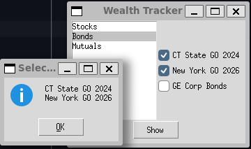
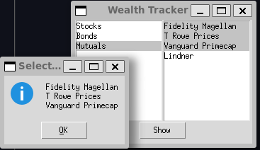

---
title: "The Builder Pattern"
---
classDiagram
class Director
class Builder {
<<interface>>
+build_part_a() PartA
+build_part_b() PartB
+get_result() Product
}
class ConcreteBuilder
class ComplexProduct
class PartA
class PartB
Director --> Builder : controls
ConcreteBuilder --|> Builder
ConcreteBuilder ..> PartA : builds
ConcreteBuilder ..> PartB : builds
PartA ..> ComplexProduct : assemble
PartB ..> ComplexProduct : assemble
Director --> ComplexProduct : Retrieves
Chapter 9: The Builder Pattern
Notes
- The factory patterns previously discussed (Chapter 5, Chapter 6, Chapter 7) deal with instantiating different subclass variants of a class hierarchy
- A related but similar problem is how to handle if we want to customise an instance of the one class
- For example, consider an address book
An address might be a,
A Person, comprising
- First name
- Last name
- Company
- Phone Number
Group, comprising
- Name
- Purpose
- Members
- Their email addresses
We want a different display to be constructed for each address type
- Not a factory here because each object has to be configured differently rather than just overriding methods
An Investment Tracker
We’ll work with a simpler example of an investment tracker program
Tracks,
- Stocks
- Bonds
- Mutual Funds
We want to be able to display each category
Then select a sub-selection of investments in that category
- Plot their comparative performance
We need our display to handle a variable number of plots
- For a large number of choices we use a listbox with multiple selections
- For three or less we use a series of checkbox values
We need a builder class that can choose how to configure the UI
---
title: Using the Builder Pattern to construct a GUI
---
classDiagram
class UIBuilder {
+Securities securities
+Listbox security_type_selector
+MultiChoiceWidget choice_ui
+build(root)
+construct_choice_ui(choices) MultiChoiceWidget
}
class MultiChoiceWidget {
+Sequence~str~ choices
+Widget frame
}
class ListboxChoice {
+Listbox list
}
class CheckboxChoice {
+Sequence~Checkbox~ boxes
}
class UIBuilder {
+Widget root
+Sequence~Securities~ securities
+Listbox security_type_selector
+Widget right_frame
+MultiChoiceWidget choice_ui
+build()
+selection_changed(event)
+construct_choice_ui(Sequence~str~ choices, Widget frame) MultiChoiceWidget
}
MultiChoiceWidget <|-- ListboxChoice
MultiChoiceWidget <|-- CheckboxChoice
UIBuilder *-- MultiChoiceWidget : construct_choice_ui
The MultiChoiceWidget
The core of the program is the
MultiChoiceWidgetwe construct to display different types of dataMultiChoiceWidgetitself is an abstract class- It defines a basic initializer containing the parent widget and the selection of choices to contain
- We then define abstract methods
make_uiwhich the widget uses to construct itselfget_selectedreturns the current selection
- We define a concrete method
clear_allthat deletes this widget from it’s parent frame- This enables us to easily swap in and out different
MultiChoiceWidgets
class MultiChoiceWidget(abc.ABC): """ Abstract widget that allows the user to select multiple options from a collection Once instantiated the UI must be constructed via the `make_ui` method. Subclasses should override the `make_ui` and `get_selected` methods. Parameters ---------- frame parent widget choices : Sequence[str] options that can be selected """ def __init__(self, frame, choices: Sequence[str]) -> None: """ Construct a new MultiChoiceWidget for the given choices Parameters ---------- frame : parent widget choices : Sequence[str] choices to add to this widget """ self.choices = choices self.frame = frame @abc.abstractmethod def make_ui(self) -> None: """ Construct the Widget """ pass @abc.abstractmethod def get_selected(self) -> Sequence[str]: """ Retrieve the currently selected elements Returns ------- Sequence[str] The currently selected choices """ pass def clear_all(self) -> None: """ Delete the current widget from the screen """ for widget in self.frame.winfo_children(): widget.destroy() - This enables us to easily swap in and out different
We then make two concrete implementations
ListboxChoice- Implements the multiple choice via a
Listbox
class ListboxChoice(MultiChoiceWidget): """ MultipleChoiceWidget implemented via a Listbox Parameters ---------- list : tkinter.Listbox The listbox """ def __init__(self, frame, choices: Sequence[str]) -> None: super().__init__(frame, choices) @override def make_ui(self) -> None: self.clear_all() self.list = tk.Listbox(self.frame, selectmode=tk.MULTIPLE) self.list.pack() for choice in self.choices: self.list.insert(tk.END, choice) @override def get_selected(self) -> Sequence[str]: selection: Sequence[str] = [ self.list.get(idx) for idx in self.list.curselection() ] return selection- Implements the multiple choice via a
CheckboxChoice- Implements the multiple choice via checkboxes
class CheckboxChoice(MultiChoiceWidget): """ MultipleChoiceWidget implemented via a Checkbox Parameters ---------- boxes: Sequence[Checkbox] checkboxes associated with this widget """ def __init__(self, panel, choices: Sequence[str]) -> None: super().__init__(panel, choices) def make_ui(self) -> None: self.clear_all() self.boxes: list[Checkbox] = [] for row, name in enumerate(self.choices): cb = Checkbox(self.frame, name) cb.grid(row=row, column=0, sticky=tk.W) self.boxes.append(cb) def get_selected(self) -> Sequence[str]: items: list[str] = [box.text for box in self.boxes if box.is_checked()] return items
The UIBuilder Method
We now define a builder class responsible for constructing the widgets
- First we define a simple factory method that chooses the correct
MultiChoiceWidget- As the implementation becomes more complex we might delegate this out to a distinct Factory class
def construct_choice_ui(self, choices: Sequence[str], frame) -> MultiChoiceWidget: """ Build the appropriate `MultiChoiceWidget` for the given selection Parameters ---------- choices : Sequence[str] options to add to the MultiChoiceWidget frame : parent widget to place the MultiChoiceWidget into Returns ------- MultiChoiceWidget The newly constructed widget """ if len(choices) <= 3: return CheckboxChoice(frame, choices) else: return ListboxChoice(frame, choices)Next we define our standard
buildmethods and create theselection_changedfunction to handle choosing between different securitiesdef build(self) -> None: """ Create the UI and initialise the attributes """ stocks = Securities( "Stocks", investments=[ "Cisco", "Coca Cola", "General Electric", "Harley Davidson", "IBM", ], ) bonds = Securities( "Bonds", investments=["CT State GO 2024", "New York GO 2026", "GE Corp Bonds"], ) mutuals = Securities( "Mutuals", investments=[ "Fidelity Magellan", "T Rowe Prices", "Vanguard Primecap", "Lindner", ], ) self.securities = [stocks, bonds, mutuals] left_frame = tk.ttk.Frame(self.root) left_frame.grid(row=0, column=0) self.security_type_selector = tk.Listbox(left_frame, exportselection=tk.FALSE) self.security_type_selector.pack() for security in self.securities: self.security_type_selector.insert(tk.END, security.name) self.security_type_selector.bind("<<ListboxSelect>>", self.selection_changed) self.right_frame = tk.ttk.Frame(self.root) self.right_frame.grid(row=0, column=1) def show_selected() -> None: """ Display the currently selected options Invokes a Messagebox """ securities = self.choice_ui.get_selected() text = "\n".join(securities) tk.messagebox.showinfo(title="Selected securities", message=text) show_button = tk.ttk.Button(self.root, text="Show", command=show_selected) show_button.grid(row=1, column=0, columnspan=2) def selection_changed(self, event) -> None: """ Callback function for when the selected securities category has changed Creates and applies the correct `MultiChoiceWidget` Parameters ---------- event : event that triggered the callback """ index = int(self.security_type_selector.curselection()[0]) security_category = self.securities[index] self.choice_ui = self.construct_choice_ui( security_category.investments, self.right_frame ) self.choice_ui.make_ui()
- First we define a simple factory method that chooses the correct
From a design patterns perspective this is not perhaps the best example of the builder
- Here both the individual
MultiChoiceWidgetinstances are the builders and the product - The
UIBuilderis more of a Director that decides how to call the builders
- Here both the individual
A good example of the builder pattern in Python is
matplotlib- Normally you start by defining a figure, or axes via one of the standard
pyplotmethods- Then add on
ticks,labels,legendsand more
- Then add on
- Normally you start by defining a figure, or axes via one of the standard
Displaying Selected Securities
In our
buildmethod we define a closureshow_selected- This is used as a callback for the
showbutton - Brings up a message box displaying the selected entities
def show_selected() -> None: """ Display the currently selected options Invokes a Messagebox """ securities = self.choice_ui.get_selected() text = "\n".join(securities) tk.messagebox.showinfo(title="Selected securities", message=text) show_button = tk.ttk.Button(self.root, text="Show", command=show_selected) show_button.grid(row=1, column=0, columnspan=2)- This is used as a callback for the
The final program can be seen in investment_tracker.py
When run it should look like the following images depending on which
MultiChoiceWidgetis constructed
When the number of choices is three or less the selection is a series of checkboxes 
When the number of choices is greater than three the selection is a listbox
Summary
The builder pattern
- Let’s you vary the internal representation of the built product
- Hide’s the details of how an object is constructed
- Each builder is independent of each other and the wider program
- Though they may follow a common interface
- Improves modularity
- Products are created in discrete steps
- Provides more fine-grained control over when we stop constructing a product
- Let’s you vary the internal representation of the built product
Questions
Some graphical programs construct menus dynamically based on the context of the data being displayed. How can you use a builder effectively here?
- We can use a director class that directs how each menu is constructed
- Different Menu types are then implemented as builder classes
- Depending on the data provided the appropriate builder is called
- Components are added to the menu dynamically as discrete steps provided by the builder
Not all builders must construct visual objects.
What might you use a Builder to construct in the personal finance industry
- Loan programs and credit programs for example might have special add-ons that clients can opt-into
- We wouldn’t want to have to define a factory or constructor that used
Noneto indicate all optional features- Especially if those options were time-limited since they would then have to live in the code in-theory indefinitely
- So instead we should use a builder which can add-on these options as distinct steps
Suppose you were scoring a track meet made up of five to six different events, can you use a builder here?
- We would likely implement the construction of each event via some variation of the factory
- The builder would then be useful as the marshalling class
- Provides the mechanism to combine events into a meet
- Since meets can be made up of different numbers of events or different event types the builder gives us flexibility